Everything for builders: the parts, the 3D-printed box, every build step, firmware updates,
and how the board and its mains circuit are designed. What it does is on the main page.
Mains voltage. Read Safety before you start, and work on the
fan and the box only unplugged.
Building one
Read Safety first. Stages 1–4 use USB power only, with no mains anywhere near the board;
mains comes only in the optional test after stage 4 and in stage 6.
What you need
The parts from Parts, and the project files from the project's GitHub page: the
repository (Code → Download ZIP, then unpack it), and from its Releases page the ready-made files
of the latest release: the MicroPython file with its licence texts, the PCB's Gerber ZIP, the box's print
files and the firmware update file. (They are built from the repository's sources for each release, so they
aren't in the ZIP.)
Soldering iron, flush cutters, multimeter, wire strippers; a ferrule crimper if you use screw terminals.
3D printer with flame-retardant (V-0) filament, and a soldering-iron tip for heat-set inserts.
A computer and a micro-USB cable that carries data (some phone charging cables don't).
Which Pico? A Raspberry Pi Pico 2 W; easiest is the Pico 2 WH, with headers
fitted. The older Pico W fits the same board but is not tested or supported (it has much less memory).
1. The board
Order the PCB. At any online PCB maker (JLCPCB, PCBWay, Aisler, …) upload the Gerber ZIP from the
Releases page (the manufacturing files every PCB service accepts) and keep the default options: 2 layers, 1.6 mm, 1 oz
copper, any colour. At 65 × 82 mm the board is in the cheapest size class (up to 100 × 100 mm): five
boards usually cost a few euros plus shipping and arrive in one to two weeks. You get bare boards; the
parts come from the parts list.
Solder the low parts first, then U1, the relays, terminals, fuse holder, PS1, and finally the Pico.
Fit the fuse for your fan: T1A up to about 100 W, T2A up to 185 W (at 120 V: half those wattages; see
Is it for you?).
Trim every lead to 3 mm or less under the board: the enclosure standoffs are only 4.5 mm.
Clean off the flux, especially between the relay contact pads.
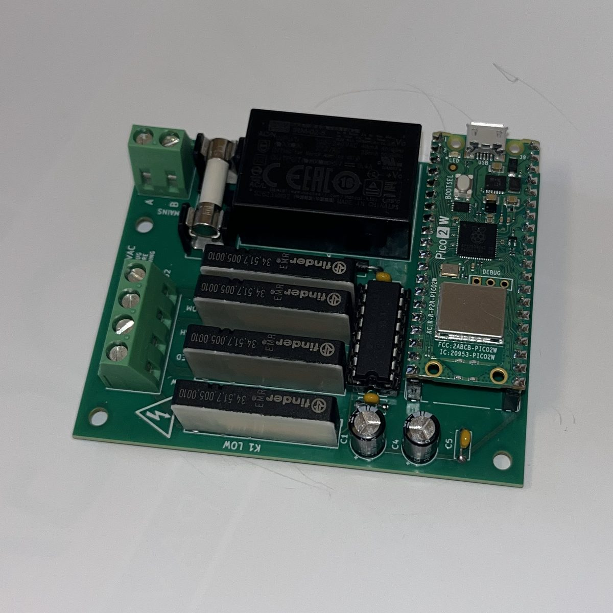
A finished board, Pico 2 W soldered on.
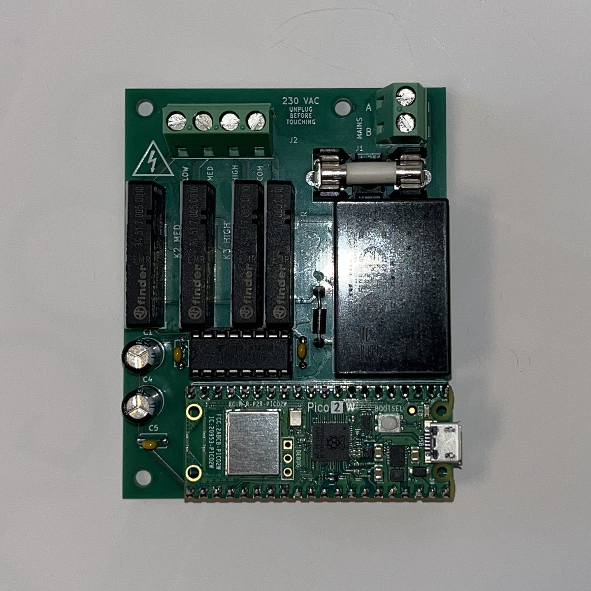
From above, oriented as in the enclosure (fan terminals at the top).
2. MicroPython on the Pico
Hold the white BOOTSEL button on the Pico and plug the USB cable into the computer, then let go.
A drive called RP2350 appears.
Copy the firmware image RPI_PICO2_W-v1.29.0-wattwind-ble3.uf2 (from the Releases page)
onto that drive. The Pico restarts by itself and the drive disappears. That's all: MicroPython is installed.
(Use this file, not the one from micropython.org: why.)
3. The fan's program, and a relay test
Install Thonny from thonny.org and open it. In the bottom-right corner, choose
MicroPython (Raspberry Pi Pico). Then View → Files: the top half shows your computer, the
bottom half the Pico.
In the top half, open the project's firmware folder. Select everything in it
except main.py, the tests folder, README.md and pytest.ini
(main.py comes last, below; the other three are for developers, not needed on the Pico), right-click and choose
Upload to /.
Relay test (fuse fitted, nothing on J1 or J2): double-click relay_test.py in the
bottom half and press the green Run button.
Part 1 runs by itself: the relays click through every level and it prints PASS. That
checks the program and the Pico's pins only (a Pico on its own would pass too), so listen:
every step must click.
Part 2 checks the board itself with a multimeter on the continuity (beep) setting. It holds
each level and tells you which terminals must beep, for example at level 2: J1 B to J2 COM, and J1 A to
J2 MED, while HIGH and LOW stay silent. Press Enter for the next step.
A missing click or a wrong beep: check the soldering around that relay, U1 and the fuse.
Now upload main.py the same way, close Thonny, and unplug the USB cable. From now on the
fan's program starts by itself whenever the board gets power. Later, once the page is up, the
line at the bottom of Settings should say files: ok: every file arrived complete (the fan checks them
against the list in manifest.json when it starts).
4. The box
Print the base and the lid: the print files are on the Releases page, one set that fits both a
soldered Pico and one in sockets. For other inserts or no labels, generate them yourself (see Enclosure). A box of your
own works too, if it meets the points in Your own box.
Melt in the seven inserts (four in the lid's bosses, three in the board standoffs), fit the M16 gland, screw the board onto its standoffs with nylon M3 screws
and nylon washers. Near mains copper a metal screw head would come closer than the board's creepage distances
allow, and a nylon screw that ever works loose can't bridge anything if it drops inside the box. No
threadlocker: it can crack many plastics, and it isn't needed here.
The lid goes on after the wiring (step 5). It fits either way round and is held by four M3 × 25
screws from underneath, up through the base's corner columns into the lid's inserts.
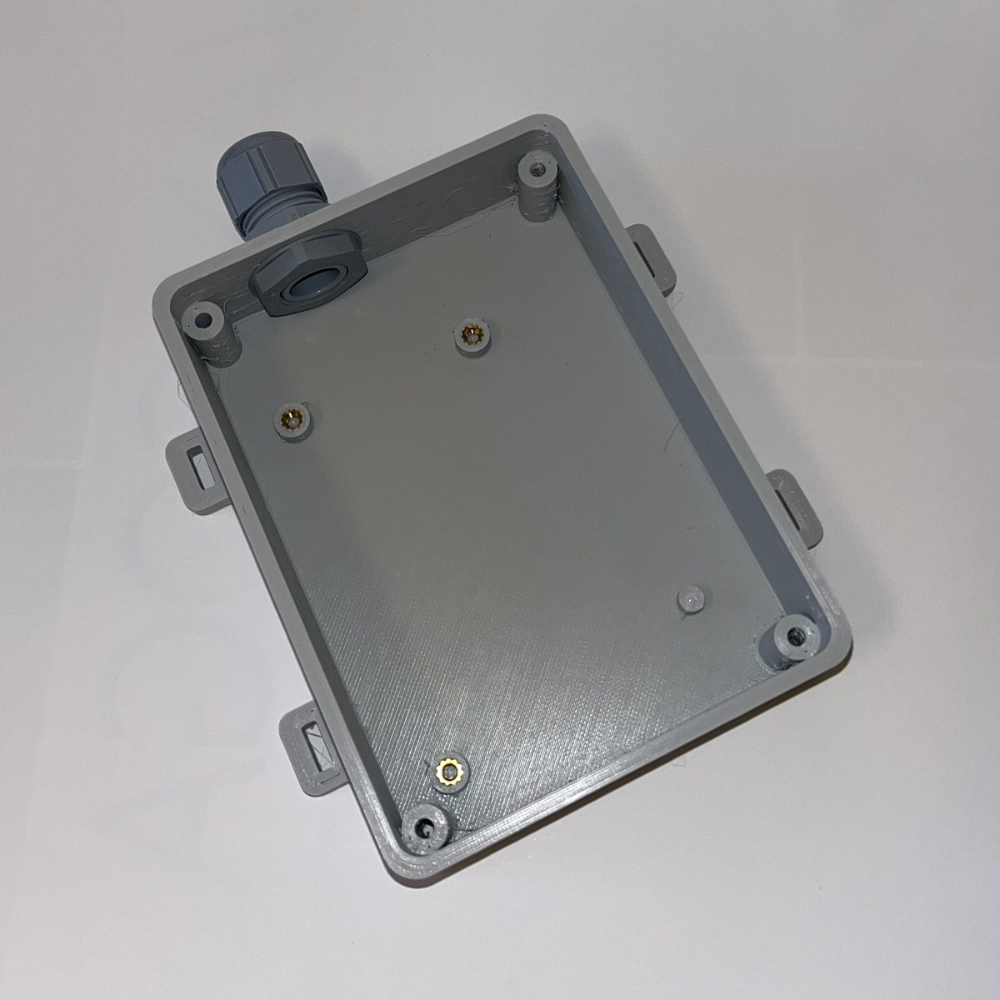
The printed base: inserts in the three board standoffs, the gland and its lock nut fitted.
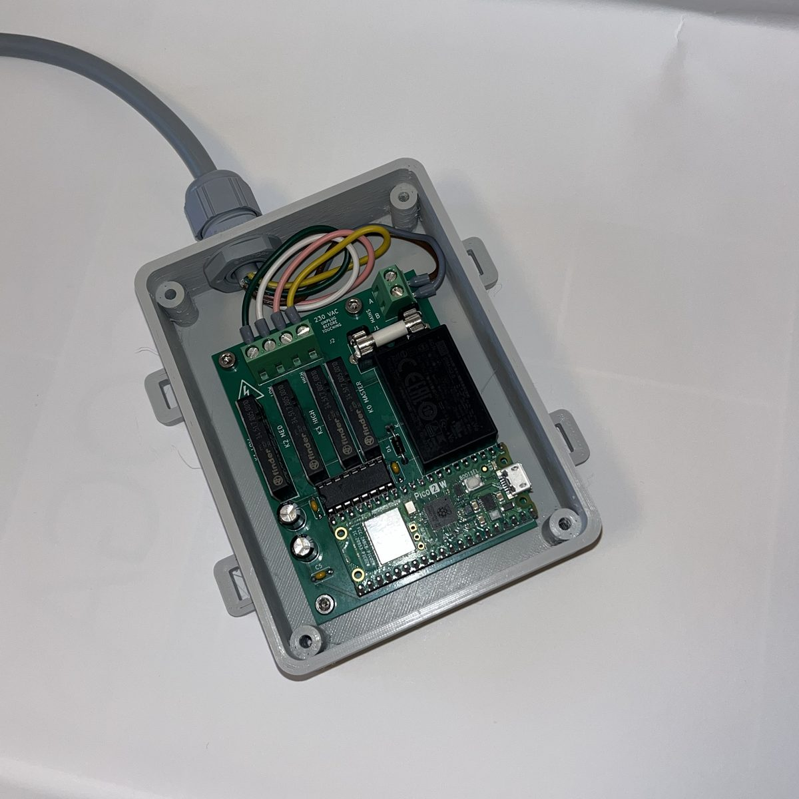
The board in, and the fan cable wired to J1 and J2 (step 5).
Optional: a mains test before the fan
If you have a spare mains cord with a plug, connect only its L and N to J1, close the box and plug it into
an RCD-protected socket. The relays should click when you press 1, 2 and 3 on the page (stage 6 explains how
to open it), and nothing should smell or get warm. Unplug, open the box and remove the cord. This catches a
build mistake before a motor is attached.
Connecting the fan
First, how a typical 3-speed fan is wired from the factory. The cord's N goes straight to the motor's
common wire (COM); L goes to the speed switch, which connects it to one of three speed wires (LOW, MED,
HIGH) on the motor's tapped winding. The earth goes to the fan's metal parts.
WattWind replaces only the speed switch. The cord's L and N now go to the box, which does the switching
with relays, and four wires come back to the motor:
L and N to J1 A and B: with a plug that fits either way round (most of continental Europe: Schuko
and the French / Belgian plug), nobody knows which wire is live, and that's fine: the board is built for
it. Both wires are switched when the fan is off, and the fuse is in wire A. If your plug only fits one way
(UK, US, Switzerland, Denmark, …) and the live wire is known, prefer L (live) → J1 A, so the fuse and
the speed relays sit in the live wire, and N → J1 B. Cord colours: brown = L and blue = N in Europe
(with a reversible plug brown is not always the live one); black = hot and white = neutral in the US.
Inside the fan, join the cord's L and N to the cable with a terminal block or lever connectors where the
speed switch used to be.
5. Wiring the fan
Unplug the fan. Open the housing where its speed switch is.
Before disconnecting anything, take a photo and label every wire with tape. The switch has one
supply wire in (from the cord) and one wire per speed out to the motor: position 1 is usually LOW. The
motor's remaining wire, the one that went to the cord's other conductor, is COM.
Not sure? With the fan unplugged, measure resistance from COM to each speed wire: it is usually
highest to LOW and lowest to HIGH.
Remove the switch. Leave the capacitor (if any) and the earth wire exactly as they were.
Other parts fed by the switch (a light, an oscillation motor, a timer): they must keep their
supply. Connect them to the cord's L and N, as they were before the switch. If you can't tell how they
are wired, don't convert that fan.
Run the 6-core cable from the fan to the box as in Connecting the fan: the cord's
L and N to J1, the motor's COM, HIGH, MED, LOW to J2. Insulate every joint inside the fan (terminal block
or lever connectors), and note which numbered core went where.
Where the cable leaves the fan, use a grommet or cable gland in the housing and a strain relief
(a cable clamp, or the one the switch's wires used) so a tug never reaches the joints and no sharp edge
touches the cable. If the cable goes through the old switch hole, see Cable entry: an
example below.
Ferrules on every stranded wire for screw terminals (never tin the ends), or WAGO spring terminals.
Pull-test each wire. Tighten the gland, close the box and the fan housing.
Cable entry: an example
How the author's fan does it, as an idea for yours. The fan has a double-D switch hole (9.7 × 12 mm) in a
1.2 mm metal housing, and the cable goes through it without drilling: outside, a printed adapter keyed into the
hole holds a standard M16 gland, which stops the cable being pushed in; inside, a printed split clamp with two M3
screws stops it being pulled out, and stands only 13 mm above the wall. Every fan's hole, wall and inside room
are different, so adapt the parts to your fan, or use a grommet or gland of your own. The Fusion script in
hardware/enclosure/fan-cable-entry is parametric (hole size, wall thickness, gland size, …), and its
README has print orientation, fitting and two other versions (a second gland inside instead of the clamp, and
printed threads).
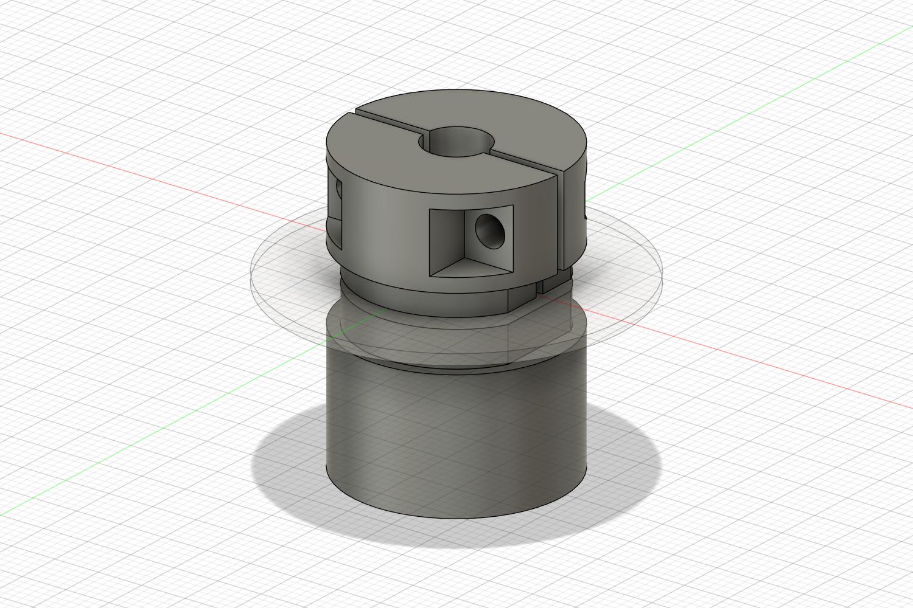
The two parts on a piece of the fan wall (transparent); the inside of the fan is at the top.
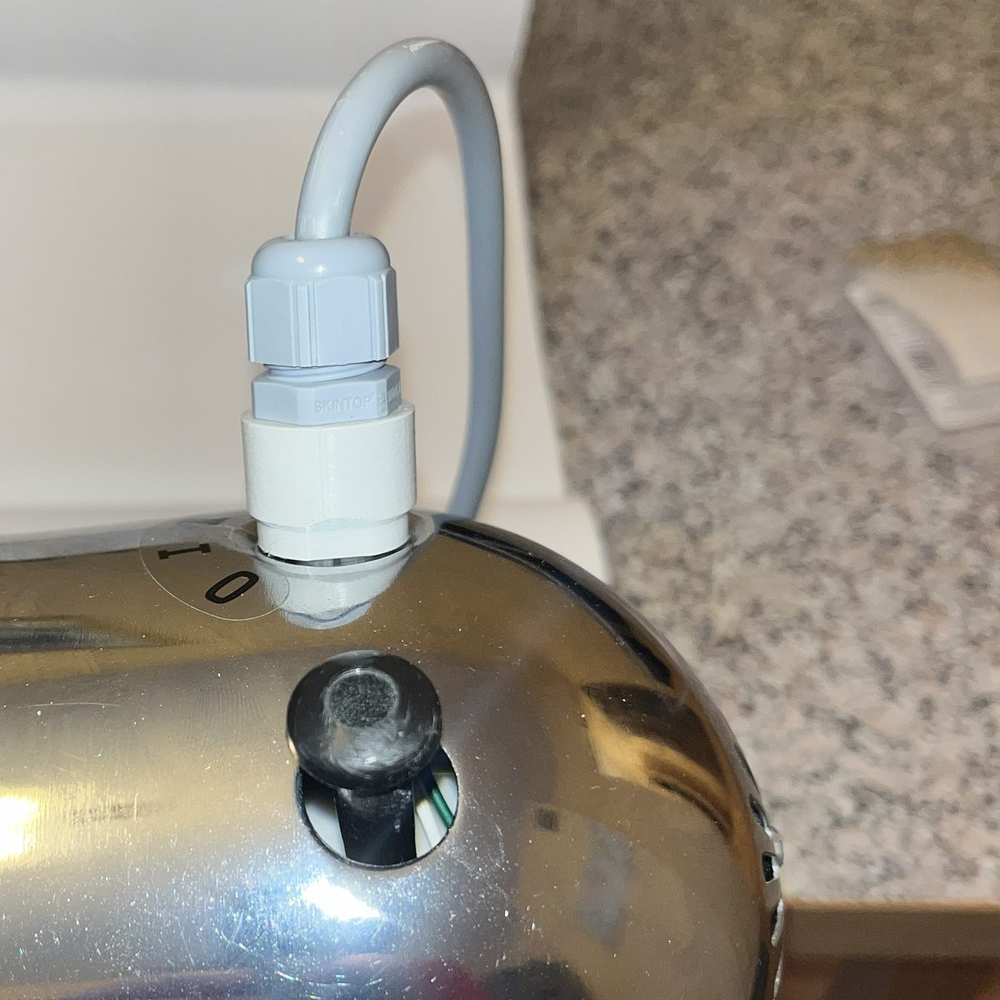
Outside: the outer adapter and its gland in the old switch hole.
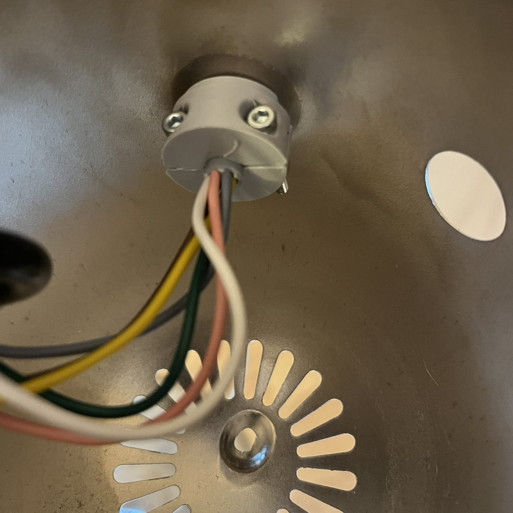
Inside: the split clamp holds the cable, so a pull never reaches the joints.
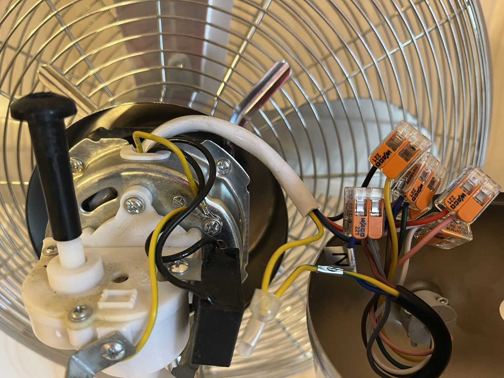
Inside the author's fan after the change, the joints in lever connectors. One fan's wiring, not a
pattern for yours: follow the steps in 5. Wiring the fan.
6. First start and setup
Plug the fan into an RCD-protected socket. The fan stays off, and within a few seconds the network
WattWind-XXXX appears.
Join it with your phone (password wattwind), open http://192.168.4.1. Press
1, 2 and 3 to check each speed. If the speeds come in the wrong order, unplug and swap the speed wires
on J2. If a level hums, starts slowly or doesn't spin, unplug at once: COM is most likely on a
speed wire. Check the wiring against your photos before trying again.
The page asks once for your own access point password and a settings PIN (the Set up your fan
card; the settings stay locked until then). Then Settings: enter your FTP and heart-rate range. Under Wi-Fi and address, enter your home network and tap Test Wi-Fi: note the address it shows, then
Save and switch.
Wear the strap, start pedaling: the fan connects to the first heart-rate and power sensors it finds and
remembers them. Press Auto, and ride.
From the page (no USB, the box stays closed): download the update file
wattwind-update-X.Y.Z.tar from the project's releases, open the fan's page, Settings →
Maintenance → Firmware update, pick the file and press Install. The fan first checks the file's
signature: it installs only updates signed with the release key of the firmware it runs, so nobody on your
network can slip it other firmware. Then it turns off, receives the files, checks every one against the
release's file list, and only then puts them in place and restarts with the new version. A dropped connection or a damaged file changes nothing. Your settings stay. A power cut while the files
are being put in place is safe too: the next start finishes the job.
Knowing when there is one:Check for updates in the same place asks GitHub (from your phone, not
the fan) whether a newer version exists, and links to it. To be told by email instead, choose Watch → Custom →
Releases on the project's GitHub page. If you publish your own firmware, set REPO in
firmware/www/index.html to your account and repository, so the button checks your releases.
With USB (the first install, a new MicroPython, switching to another maker's firmware, or if the page
can't be reached):
Unplug the fan from mains, take the box off the fan stand, undo the four screws underneath and lift off the lid, undo the board's three screws and lift it
as far as its wires allow, so the USB cable fits into the Pico (there is no room next to the wall). With
UsbOpening = 1: just pull out the USB plug.
Open Thonny. Connecting stops the fan's program: the Pico switches the relays off and restarts in
update mode (nothing runs, so it can't restart halfway through copying). If Thonny says the
connection was lost, click the red Stop button; the shell then shows UPDATE MODE.
Upload everything in the new firmware folder except the tests folder, as in
stage 3, main.py included. Your settings (config.json on the fan) stay.
Unplug the USB cable, screw the board back in, put the lid on (four screws from underneath), strap the box back on and plug the fan in: it starts normally. At the bottom
of Settings the new version shows, with files: ok.
USB and update mode
Plugging in USB changes nothing: the fan keeps running, the cable is just extra power and a serial
port. What stops the program is a Ctrl-C over that port, and Thonny, mpremote and
MicroPico (VS Code) all send one when they connect.
Update mode: after that Ctrl-C the fan switches the relays off and restarts with nothing running (no
fan program, no Wi-Fi, no watchdog), only MicroPython's prompt, so files can be copied calmly. The tool
usually loses the connection at that restart: connect again.
Back to normal: a real power-up (unplug and plug in again; with USB and mains connected, both
must be off at the same time), or from the computer:
mpremote exec "import os,machine; os.remove('update_mode.txt'); machine.reset()".
The fan's page says why it restarted: end of update mode.
Watching the running fan without stopping it: a plain serial terminal at 115200 baud, for example
python -m serial.tools.miniterm COM4 115200 (pyserial), PuTTY or a serial monitor. It shows a
status line every second in Auto (t=… P=… HR=… dem=… lvl=…) and the Wi-Fi and Bluetooth
messages. Keys: 0–3 a level, a Auto, s status.
Don't press Ctrl-C there: that is update mode again.
MicroPico in VS Code connects by itself when the folder opens, which stops the fan. Set
"micropico.autoConnect": false in the workspace settings and connect by hand when copying.
Your own firmware (forks and changes)
Only for changing the firmware (a fork, your own tweak); for installing releases, the steps above are
all you need. Every firmware folder carries a file list,
firmware/manifest.json, with a SHA-256 checksum of each file. The fan checks its files against it at
every start (files: ok at the bottom of Settings), and the update from the page uses it to send only changed
files and to check them before anything is replaced. Updates over Wi-Fi must also be signed: the fan
carries a public key (firmware/release_key.py), and only an update signed with the matching private
key is installed. Your own firmware needs your own key, once:
python tools/make_keys.py (on Windows, type py instead of python if
python isn't found or opens the Microsoft Store; the same for every command below): makes a key pair. The private key goes to a folder outside the
project that you name in tools/signing_key_path.txt (git-ignored); back it up once and never share
it. The public key goes into firmware/release_key.py. Install that firmware over USB once: from
then on your fans take your updates over Wi-Fi (and only yours).
Your signing key
Keep it: it is one small file. Back it up once (a USB stick in a drawer, or a password manager), and never
put it in git, a shared folder or a zip for others: whoever has it can sign updates your fans accept.
Lost it: your fans keep working; only Wi-Fi updates stop. Make a new key pair, build the firmware with the
new public key and install it over USB once; from then on updates go over Wi-Fi again.
Leaked it (or you're unsure): the same, a new key pair and one USB install (move the old key file away first: make_keys.py never overwrites a key). The old key is then worthless
to anyone, because your fans no longer trust it.
Switching between makers (from the official firmware to a fork, to your own, or back): each firmware
accepts only updates signed by its own maker, so the switch is one USB install; after that, that maker's
updates come over Wi-Fi. USB always works: it is the owner's way in, and needs the box opened.
Then, after changing anything:
Bump the version in firmware/version.py (the page and the logbook then show which build runs).
python tools/make_manifest.py: writes the new manifest.json (needs Python 3 on the PC,
nothing else).
Either copy the changed files by USB (as in stage 3, manifest.json included), or run
python tools/make_update.py: it packs the files and the manifest into
dist/wattwind-update-X.Y.Z.tar and signs it (manifest.sig) for Settings → Maintenance →
Firmware update.
Without step 2 the fan still runs, but shows files: changed …, and the page refuses an update file whose
files don't match its list. How the firmware works inside: firmware/README.md.
Test versions, to try a fix with someone before releasing it: start from the release (a branch from its
tag), set the coming version plus -test.N in version.py (for example
1.0.1-test.1, then -test.2 …) and build the update file as above; it is signed with the
same key. Share it on the issue or as a GitHub pre-release. The page shows Test version while one
runs. When the fix is confirmed, release 1.0.1: a version with a dash counts as older than the plain
number (semver.org), so the release installs as a normal update.
mains in; any 2-pole 5.0 or 5.08 mm terminal fits (e.g. Phoenix PT 1,5, WAGO 236-102 or 250-502)
J2
Phoenix Contact MKDS 1,5/4-5,08 (1715747)
fan out: 1 COM, 2 HIGH, 3 MED, 4 LOW; any 4-pole 5.0 or 5.08 mm terminal fits (e.g. WAGO 236-104 or 250-504)
C1, C4
100 µF ≥ 16 V electrolytic
VSYS bulk
C2, C3, C5
100 nF 50 V X7R
decoupling
—
M16 × 1.5 cable gland, 6-core 0.75 mm² flexible power cable rated 300/500 V from the fan to the box (not a LiYY-type control cable), M3 heat-set inserts (4 × M3 × 5.7, 3 × M3 × 3), M3 screws (4 × 25 mm steel, socket or pan head, for the lid, from underneath; 3 × 5–6 mm nylon with nylon washers for the board); see
Heat-set inserts. Where the cable leaves the fan: whatever suits your fan's hole, wall
and room inside (a grommet, a cable gland, or the printed cable-entry
parts, as an example)
enclosure, fan
What it costs
About €70–80 for one fan (prices checked October 2026, single quantities, without tools and the fan
itself). The four relays are almost half of it, about €34; the Pico 2 WH about €11, the power module about €5,
the PCB a few euros for five boards plus shipping, and everything else a few euros together. Prices change: the
full list with sources is in hardware/docs/prices.md.
Enclosure
A 3D-printed two-part box, generated by a parametric Fusion 360 Python script: change a number,
re-run, and the whole box rebuilds, then checks itself for collisions against the board's real 3D
model.
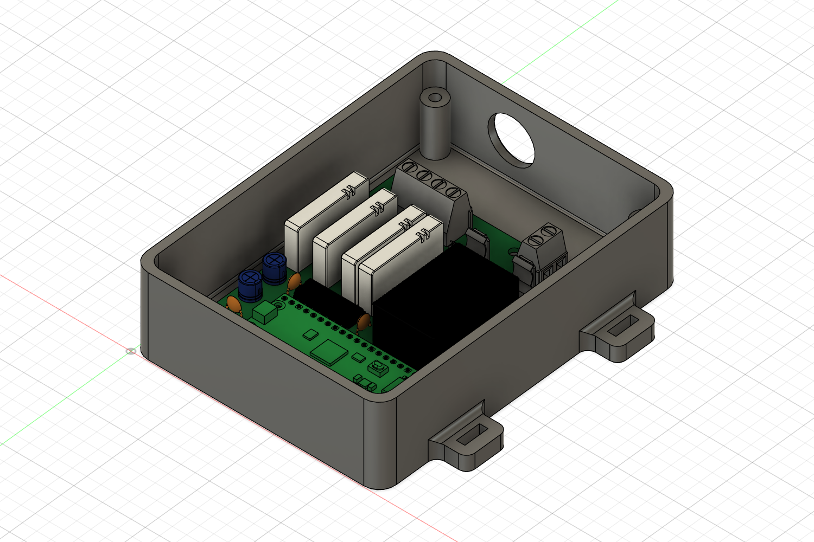
Base with the board: cable bay and M16 gland at the top, closed side walls, a screw column in each corner.
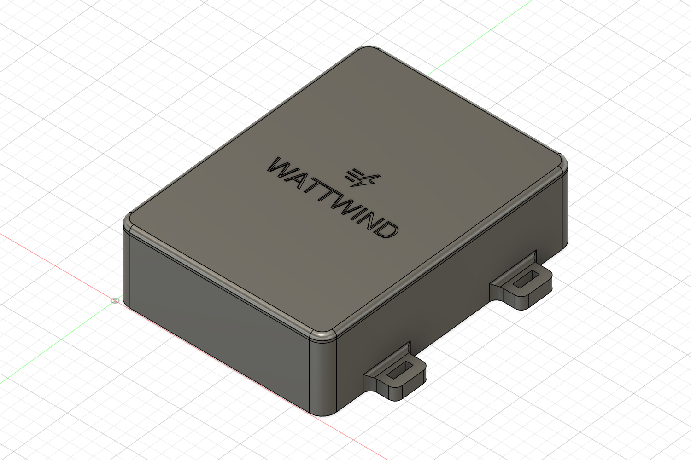
Closed: 87.5 × 117.5 × 33.4 mm, no screws on top.
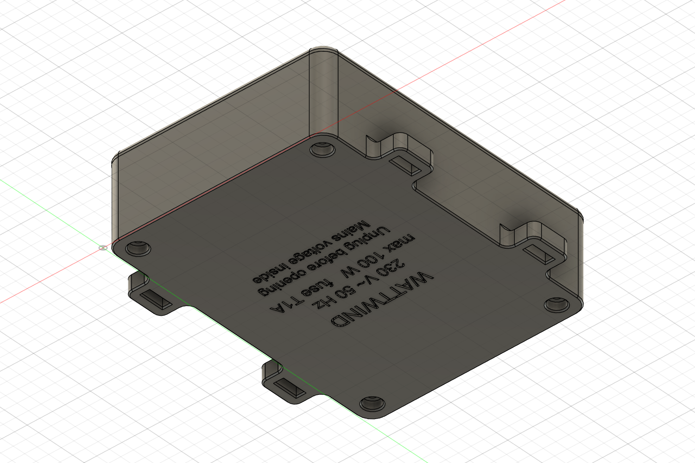
Underneath: the four lid screws in counterbores, and the rating plate.
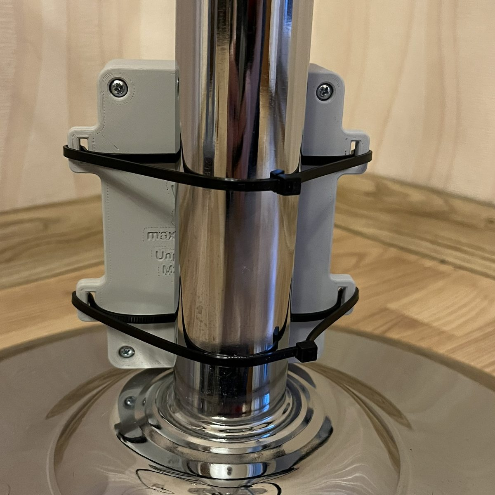
On the fan, from behind: two cable ties through the lugs, around the stand's pole.
One cable in: The fan keeps its own mains cord and plug, with its earth (PE) connected inside the fan as from the
factory. One 6-core cable runs from the fan to the box: L and N from the fan's cord to J1, and COM, LOW,
MED, HIGH back from J2 to the motor. Nothing in the plastic box is earthed, so no earth wire goes to it.
The cable enters through a single M16 gland into a cable bay above the terminals.
Use a flexible power cable with 0.75 mm² cores rated 300/500 V (printed on the jacket), for example
Lapp ÖLFLEX CLASSIC 110 6 X 0.75 or a YSLY-OZ 6 × 0.75. Control and data cables such as LiYY are made for
signals, often rated only 300/300 V or less, and are not meant for mains power, even with 0.75 mm² cores.
Best is a cable without the green-and-yellow striped earth core ("X" or "OZ" = without it, "G" or "JZ" =
with one). Plain green or plain yellow cores are fine. With a 7G cable, connect the green-and-yellow core to the fan's earth at
the fan end and leave it insulated in the box (end cap or a Wago); never use it for anything else. Check
that the cable's diameter is in the gland's clamping range. The gland sits high
enough for any M16 lock nut (up to 25.4 mm across the corners) to turn inside, and the lid's lip is notched
above it.
Lid with a locating lip (it fits either way round) and the engraved WattWind symbol and name. Four
M3 × 25 screws come from underneath, through columns in the base corners into heat-set inserts in bosses
under the lid, their heads in counterbores. Nothing to unscrew on top: to open it you need a screwdriver and have to take
the box off the fan, as a cover over mains parts should.
Sturdy: 3 mm walls, floor and lid, rounded corners, and the screw columns merged into the walls.
Labels: the rating and warning are engraved on the underside of the base
(both optional; see Labels below).
Board on three 4.5 mm standoffs with M3 × 3 inserts, plus a support post under the Pico.
No USB opening (default): a closed box with nothing a child can poke into. Firmware updates go over
Wi-Fi; for the rare USB job (a new MicroPython, another firmware) the lid and the board come off. UsbOpening = 1
adds an opening for the Pico's USB, closed by a press-fit printed plug with grip ribs and a pull tab: notches in
the back of its edges leave a slot for a small screwdriver or a coin to twist it out; its fit is adjustable
(PlugClearance).
Cable-tie lugs (6 mm thick, for ties up to 8.5 mm wide) to strap the box to the fan stand: two ties around the pole (photo above).
Fillets and chamfers everywhere that matters for strength and printability (elephant's-foot chamfer on the bottom edge).
No Fusion? Each release also has ready-made files built with the default settings, one set for a Pico
soldered on or in 8.5 mm sockets: base and lid as 3MF / STL (to print) and STEP (for any CAD), and
the whole design as a Fusion archive (.f3d, with its timeline and user parameters).
Heat-set inserts
The box is drawn for M3 heat-set inserts that need a 4.0 mm hole, for example CNC Kitchen's M3
standard and short inserts (4.6 mm outside diameter). Each hole is 1 mm deeper than its insert, for the
plastic the insert pushes ahead of it.
Where
Qty
Insert
Hole (Ø × depth)
Screw
Lid bosses
4
M3 × 5.7
4.0 × 6.7 mm
M3 × 25, socket or pan head, from underneath
Board standoffs
3
M3 × 3
4.0 × 4.0 mm
M3 × 5 (× 6 with the washer), nylon, with nylon washers
Other inserts work too: set LidInsertHole and BoardInsertHole to the hole their maker recommends, and
LidInsertDepth / BoardInsertDepth to their length + 1 mm, then run the script again
(user parameters in Fusion, see below). The standoffs grow with the hole, keeping 1.7 mm of plastic
around it. Example: generic inserts with a 5 mm outside diameter, M3 × 6 in the lid and M3 × 3 in the
standoffs: both holes 4.4 mm, LidInsertDepth 7 mm, BoardInsertDepth 4 mm.
The board inserts can be at most about 5 mm long (the standoffs are 4.5 mm), and holes above about 5 mm
don't fit next to the wall; the script stops with a message if a value doesn't fit.
Generating it in Fusion 360
The box is not a fixed model: a Python script (hardware/enclosure/WattWindEnclosureV2/WattWindEnclosureV2.py)
builds it from the numbers at the top of the file. Change a number, run it again, and every part follows.
In Fusion 360, start a new, empty design. The script deletes the timeline of the open design
and rebuilds everything, so don't run it in a design you want to keep.
Utilities → Add-Ins → Scripts and Add-Ins. On the Scripts tab click + and pick the
folder hardware/enclosure/WattWindEnclosureV2 (only the first time).
Select WattWindEnclosureV2 and click Run. After a short while you get the components
Bottom (the base), Top (the lid, with the engraved label), Board (and USB plug
with UsbOpening = 1)
(Board: a PCB placeholder, a parts keep-out and the board's real 3D model from
hardware/production/wattwind.step), and a "built" message. The first user parameter, AAA_RunScriptAfterChanges, is only a reminder:
after changing any parameter, run the script again.
Check the fit in the Text Commands panel: every "interference … volume" and
"board STEP models … overlap" line should be 0. With the USB opening, the "USB plug vs base" line shows a small overlap:
that is the plug's friction ribs pressing 0.15 mm, which is intended (at PlugClearance 0.2 they just touch).
Right-click the components Bottom and Top (and USB plug, if any) → Save as Mesh (3MF or
STL). Print the bottom floor-down and the top top-down.
Labels. The lid is engraved 0.6 mm deep with just the WattWind symbol and name. The rating and the
warning (the mains voltage, the maximum fan power that goes with it and the fuse: at 230 V 100 W with T1A or 185 W with T2A, at 120 V 50 W or 95 W; the fuse; "Unplug before opening") go on the underside of the base, like
a rating plate, mirrored in the model so they read right side up when you turn the box over. Both parts print
with that face on the bed, so the engraving is in the first layers. For a plain lid or underside, right-click
the timeline group Lid label or Base label → Suppress, or set the user parameter
LidLabel / BaseLabel to 0 and run the script again. The rating plate follows two user
parameters: FuseAmps (the fuse) and MainsVolts (230 or 120 V), which together set the
voltage, frequency and maximum fan power; the texts are at the top of the script (below).
Print it in a flame-retardant (UL94 V-0) filament if you can get one; ordinary PLA, PETG and ASA
are all only HB rated. It is a mains enclosure.
UL94 is the standard flammability test for plastics. HB (horizontal burn) is the
lowest class: the plastic burns slowly but does not put itself out. V-0 means it goes out within 10 s
with no burning drips. Almost every common filament (PLA, PETG, ABS, ASA, TPU) is HB or not rated at all.
Look for one sold as FR-ABS, FR-PC or FR-PETG, check that its datasheet gives V-0 at about 2–3 mm
(the walls are 3 mm), and print the walls solid.
Changing a setting. The main settings are stored in the design itself: Modify → Change
Parameters, section User Parameters. The first run creates them with the defaults below. Each
design keeps its own values, so you can have one design per build. The comment next to each parameter shows
its default; to get a default back, delete the parameter and run the script again. The script file itself
never changes.
After changing a parameter, run the script again, in the same design
(Utilities → Add-Ins → Scripts and Add-Ins → WattWindEnclosureV2 → Run). Changing the value alone does
nothing to the box. Why: the box is not drawn from the parameters directly. The script reads them and then calculates the
shapes, because many sizes depend on each other (the standoffs follow the insert hole, the box height follows
the Pico and the leads, the labels are laid out to fit). It also checks the result, for example that an insert
hole can't go through the floor or a standoff reach the wall, and those checks only run in the script.
(The fan cable-entry adapters are different: there the parts follow a parameter change at once.)
User parameter
Default
What it does
PicoSocketHeight
0 mm
Pico soldered directly; change only for sockets (below)
LeadTrim
3 mm
How short you cut the leads under the board; the standoffs follow, leaving 1.5 mm below the leads
GlandNutAcrossCorners
25.4 mm
The cable gland's lock nut (inside the box), measured across the corners. M16 nuts are 19 to 22 mm across the flats; 25.4 fits the largest. It sets how high the gland sits, so the nut can turn against the wall
Hole for the board standoffs' M3 heat-set inserts; the standoffs grow with it
LidInsertDepth
6.7 mm
Hole depth in the lid bosses: insert length + 1 mm
BoardInsertDepth
4 mm
Hole depth in the board standoffs: insert length + 1 mm
ClearanceLeft, ClearanceBottom, ClearanceRight
7.5, 7.5, 9 mm
Board edge to the inside walls: left and the Pico edge (room for the corner columns), and the right (room for J1's wires and the USB plug side)
UsbOpening
0
0 = closed wall (default); 1 = an opening for the Pico's USB with a press-fit plug
PlugClearance
0.05 mm
Only with UsbOpening = 1: the USB plug's gap per side, chosen in a printed fit test. If it is too tight, try 0.1 mm; if it falls out, 0. Printers differ, so adjust after the first print
LidLabel
1
1 = WattWind symbol and name engraved on the lid, 0 = plain lid
BaseLabel
1
1 = rating and warning engraved on the underside, 0 = none
FuseAmps
1
The fuse you fit, shown on the label: 1 = T1A (fans up to about 100 W, most floor fans), 2 = T2A (up to 185 W); at 120 V half those
MainsVolts
230
Mains on the label: 230 (50 Hz) or 120 (60 Hz, untested). The label's maximum fan power follows it and FuseAmps
BoardModel
1
1 = load the board's 3D model for the fit check, 0 = skip it (faster)
The labels' text and letter sizes (LABEL_LINES, BASE_LABEL_LINES), the symbol's height (LABEL_LOGO, 0 = none) and the defaults for a new design are at the top
of the script itself. To edit it, select WattWindEnclosureV2 in Scripts and Add-Ins and click Edit:
Fusion opens it in Visual Studio Code (and offers to install it). Any plain-text editor works too, such as
Notepad or TextEdit, on hardware/enclosure/WattWindEnclosureV2/WattWindEnclosureV2.py. In a design
that already has the user parameters, those win over the script's defaults.
If you put the Pico in sockets
The enclosure is made for the Pico soldered onto the board on its pin headers. If you use 1×20 female
header sockets instead (so the Pico can be pulled out), it sits higher by the height of the sockets'
plastic body, and the USB connector with it. Measure that height from the board surface to the top of
a socket (8.5 mm is the common part), set the user parameter PicoSocketHeight to it and run the
script again.
Soldered (default)
8.5 mm sockets
PicoSocketHeight
0
8.5 mm
Box height, closed
33.4 mm
33.4 mm (34.7 mm with UsbOpening = 1)
USB opening, if any (centre above the outside bottom)
13.9 mm
22.4 mm
Without the USB opening the box stays the same, so the release's print files fit both. With it, the box grows 1.3 mm, because the raised opening and its
plug's pull tab have to stay below the lid's locating lip. In the board's 3D model the script lifts the
Pico by that height and adds the two sockets under it, so the fit check covers the raised Pico too.
Your own box
The printed box is one way to house the board. If you design your own or use a bought junction box, it has to
do everything the printed one does. The easiest way to get a different size is often to change the script's user
parameters (above) and let it check the fit.
Must have
Plastic, not metal. The board keeps its mains copper 3 mm from the board edge, which is enough next
to plastic but not next to metal (that would need 8 mm). The board has no earth, and a metal box would also
block the Wi-Fi and Bluetooth.
Flame-retardant. UL94 V-0 (see the note above). For a bought box, look for UL94 V-0 or a glow-wire
rating (IEC 60695-2-11) in its datasheet; many polycarbonate junction boxes have one.
Closed. No opening except the cable entry, and nothing a 1 mm wire could get through (the IP4X
test). No vents needed: the board makes only about 1 W of heat.
A lid that needs a tool: screws, not a snap-on lid or thumb screws.
Strain relief where the cable enters: a gland whose clamping range fits your cable, tightened, so a pull
or a twist on the cable never reaches the terminals. Leave the cores a little slack inside.
Board mounting. The board is 65 × 82 mm, with three 3.2 mm holes. With the terminals at the top, they are
at 4 mm from the left and top edges, at 44 mm from the left and 4 mm from the top, and at 4 mm from the left and
78 mm from the top. The fourth corner (the Pico's USB end) has no hole: support the board there with a post
under the Pico, about 58.5 mm from the left and 70 mm from the top, where the underside has no pads.
Use nylon screws and washers (see step 4), and standoffs at least 1.5 mm taller than the trimmed leads
(4.5 mm with the leads cut to 3 mm).
Height. Parts reach up to about 18 mm above the board's underside: the terminals, depending on their
make, with the relays and the power module at about 16.7 mm. Leave at least 1 mm to the lid, more above J1 and J2
for the wires.
Room for the wires. J2's wires come in from the top edge and J1's from the right edge (its 45° entry
faces the right wall). The printed box leaves 22 mm above the board for the gland, its nut and the wire loops,
and 9 mm on the right. Nothing may press on the terminals or the relays when the lid is closed.
Mains wires stay on the mains half. The silkscreen line marks the boundary: route the cable's cores
along the top and tie them (to each other, or to a point in the box) so that a core that comes loose can't
reach the Pico side.
Labels on the outside: the mains voltage, the maximum fan power and the fuse, "Unplug before opening"
and "Mains voltage inside".
Recommended
Keep metal away from the Pico's antenna end (the board's bottom-left corner, about 10 mm from the left
edge). A box strapped to a chrome pole works on the author's fan, but don't put the box inside a metal base or
behind a metal plate.
Plan for USB: the Pico's USB faces the right edge. Either leave enough wire length to lift the board out,
or add an opening with a plug, as the script's UsbOpening does. Never connect USB with mains
plugged in.
Lid screws into brass inserts (or a box with metal threads) rather than straight into plastic, if you
will open it more than a few times.
Where it goes: firmly on the fan stand, clear of the blades, out of direct sun and away from heaters (the
page warns when the Pico's chip reaches 70 °C), and where sweat and drinks don't land. Route the cable so the
fan's tilt and oscillation never pull on it.
The fan's API
Everything the page does goes through a small JSON API on the fan, so phone shortcuts, a voice assistant or
Home Assistant can use it too (phone examples in the manual, Home Assistant
below).
Method
Path
Purpose
GET
/api/status
mode, level, HR, power, cadence, scores, demand, sensor, heart-rate sharing and Wi-Fi state, firmware version and diagnostics
POST
/api/mode
{"mode":"auto"} (optional "nudge":-2..2) or {"mode":"manual","level":0-3}
GET / POST
/api/config
read and update settings
POST
/api/update/start, /file, /finish
firmware update from the page: the signed manifest (Ed25519) and sizes, then the changed files in 4 KB pieces, then check and restart
POST / GET
/api/wifi/test
from the access point: join a network and report the IP it gets (nothing saved)
POST
/api/wifi
save SSID and password, then reboot
GET
/api/diagnostics
one text file for analysing a problem: status, settings without passwords, flash, memory, Wi-Fi, files and both logbooks (settings PIN in X-Pin)
POST
/api/backup, /api/restore
settings as a backup file ("secrets": true adds passwords and keys); restore checks every value, saves and restarts
POST
/api/reboot
fan off, hard reset
POST
/api/setup
first setup: own access point password and settings PIN; until then the routes that change settings answer 409
POST
/api/erase
Erase everything: settings, riders, Wi-Fi, PIN, keys and logbook; the fan restarts as new
GET
/api/wifi/scan
nearby 2.4 GHz networks (name, signal, password or open), strongest first
clear the one-time message (e.g. after a PIN reset)
GET
/api/scan
nearby BLE sensors, for choosing which ones the fan uses
GET / POST
/api/detail
the detailed recording (24 h, for finding a problem): GET downloads it, POST {"action": "start"} / "stop" / "delete" (settings PIN)
GET
/api/log
the fan's logbook: starts with reason, a status line every 5 minutes while something changes (30 when quiet), and events (Wi-Fi, sensors, buttons, settings, updates, security) (?old=1: previous file; settings PIN in X-Pin)
GET
/help
the user manual
Home Assistant
Add to configuration.yaml (use the fan's IP address, and reserve it in your router):
Then call rest_command.wattwind with mode: manual, level: 2 (or mode: auto)
from a script, an automation or a dashboard button. If Fan buttons need the PIN too is on, add
"pin": "1234" (your PIN) to the payload. Phone shortcuts (iPhone, Android) are in the
manual.
Under the hood
For developers: firmware/README.md in the repository (all documents: below) describes how the firmware is built up (tasks,
shared state, watchdog), the relay safety design, the Auto logic, the linked-fans protocol and the firmware update,
and how to run the tests.
The documents in the repository
Besides this site and the user manual, the repository has these text files, for anyone who wants the details:
File
What's in it
For
README.md
What WattWind is, the mains warning, where to start
everyone
CHANGELOG.md
What changed in each release, and whether builders need to do anything
everyone
firmware/README.md
How the firmware works: tasks, relay safety, the Auto logic, linked fans, updates and signing, web security, tests
developers
SECURITY-CHECK.md
Every point of the ETSI EN 303 645 security baseline: done, partly, or left out, with the reason
the curious, reviewers
SECURITY.md
How to report a security problem
everyone
hardware/README.md
The relay board: versions, files, how to make the Gerbers
builders
hardware/DESIGN.md
Why the board is the way it is: clearances, relays, terminals, the decisions and their reasons
designers
hardware/docs/bom.md, prices.md
Parts list with part numbers, and what one fan costs
builders
hardware/docs/netlist.md, placement.md
Every connection, and where each part sits on the board
designers, repairs
hardware/enclosure/fan-cable-entry/README.md
The printed cable-entry parts for the fan: sizes, printing, fitting
builders
micropython/README.md
The custom MicroPython: what is changed, and how to rebuild it yourself
developers
LICENSE files
Firmware MIT; hardware and mechanical designs (PCB, enclosure, cable-entry and other printed parts, in every published form) CERN-OHL-P v2; site, docs and the project's own images CC BY 4.0; third-party material and the WattWind name and logo not included
everyone
micropython/LICENSES
The licences of what is inside the custom MicroPython file (MicroPython, BTstack, cyw43-driver, Pico SDK)
everyone who passes the file on
Why a custom MicroPython
MicroPython 1.29, the current release when this
was built, supports only one Bluetooth connection at a time on the Pico 2 W: its Bluetooth stack
(BTstack) is compiled with room for a single connection. The fan needs two at once, the heart-rate
strap and the trainer. With the standard UF2 from micropython.org the first sensor connects and the
second fails (OSError 107).
So the project comes with its own UF2: MicroPython 1.29, unchanged except for
that limit, raised to 3 (strap, trainer, and one app or watch for Share heart rate). It is built from the official source by one
script in a Docker container, so you can rebuild it or check exactly what changed. If a later
MicroPython release lifts the limit, the standard firmware will do.
Sensors and data flow
SensorsHeart-rate strap (BLE 0x180D) and trainer power + cadence (Cycling Power 0x1818, FTMS fallback)
→
Pico 2 WFilters power and HR, scores them against your FTP and HR range
→
Fan level 0–3Hysteresis and dwell times so it never flaps between speeds
→
RelaysEnergise exactly one speed winding of the fan
Both sensors are connected at the same time, their addresses are remembered, they reconnect automatically,
and data counts as stale after 5 s of silence. With Share heart rate on, the fan is also a heart-rate sensor
itself (ble_share.py, Heart Rate service 0x180D, named WattWind-XXXX HR): one app or watch can connect,
and gets every notification of the strap unchanged while the strap is worn.
Software and tools
Firmware: MicroPython, asyncio with one task per subsystem sharing one state object;
aioble for Bluetooth, Microdot for the web server. 400+ pytest tests on the PC, including
whole simulated rides. The real test ride on the main page was also replayed through the Auto code, second by
second: the fan's 18 level changes matched it within 2 s.
Security: compared item by item with ETSI EN 303 645, the consumer-IoT baseline behind the EU and UK
rules, as a guide, not a certification (SECURITY-CHECK.md in the repository): own password and PIN
at setup, signed updates (Ed25519), encrypted linked-fans messages (AES-128 + HMAC), with the reasons for what is
left out on purpose (plain HTTP inside your Wi-Fi's encryption, no secure boot, so builders keep control of
their own fan). A hobby project: no promised support or updates.
MicroPython: 1.29 with the Bluetooth connection limit raised from 1 to 3, built in Docker.
Hardware: KiCad 10 with custom DRC rules for mains clearances and creepage.
Enclosure: Fusion 360 Python script.
Developed against a Pico-based BLE simulator that advertises heart rate and power, then on the author's
own fan, strap and trainer.
Design details: the relay board
A custom 2-layer PCB (KiCad 10), 65 × 82 mm, all through-hole so it can be hand-soldered. The
top half is mains, the bottom half is 5 V, and a dashed line on the silkscreen marks the boundary.
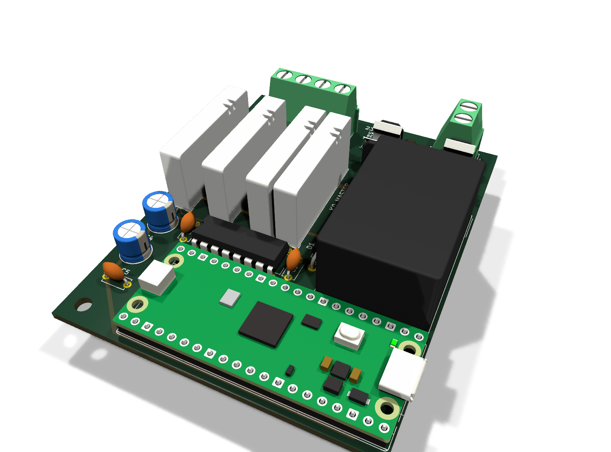
The relay board, rendered from the KiCad design. Four Finder relays, a Mean Well 5 V module, a fuse and the Pico. The relays are drawn white for clarity (the real Finder relays are black), and the
render uses the Pico W model (the Pico 2 W looks the same) soldered onto the board.
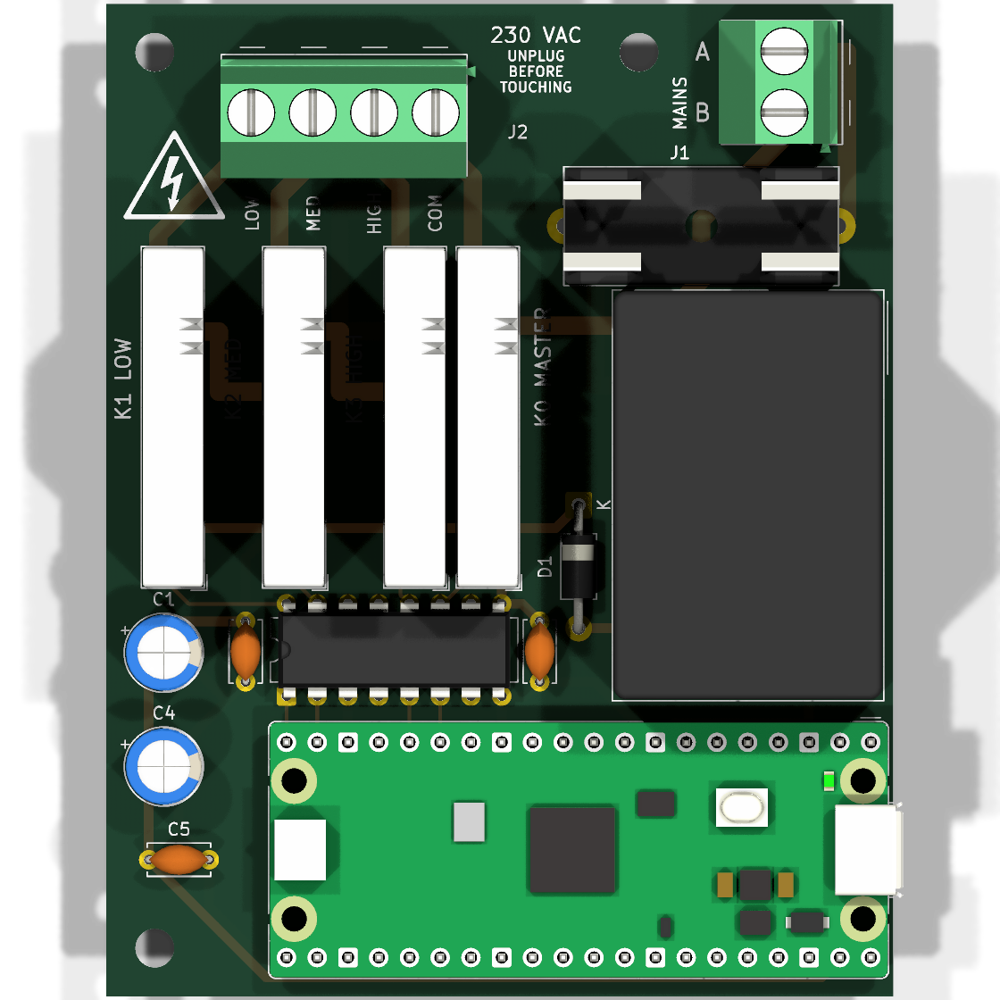
Top: fan terminal J2, mains terminal J1, fuse F1, four relays, power module PS1, driver U1 and the Pico.
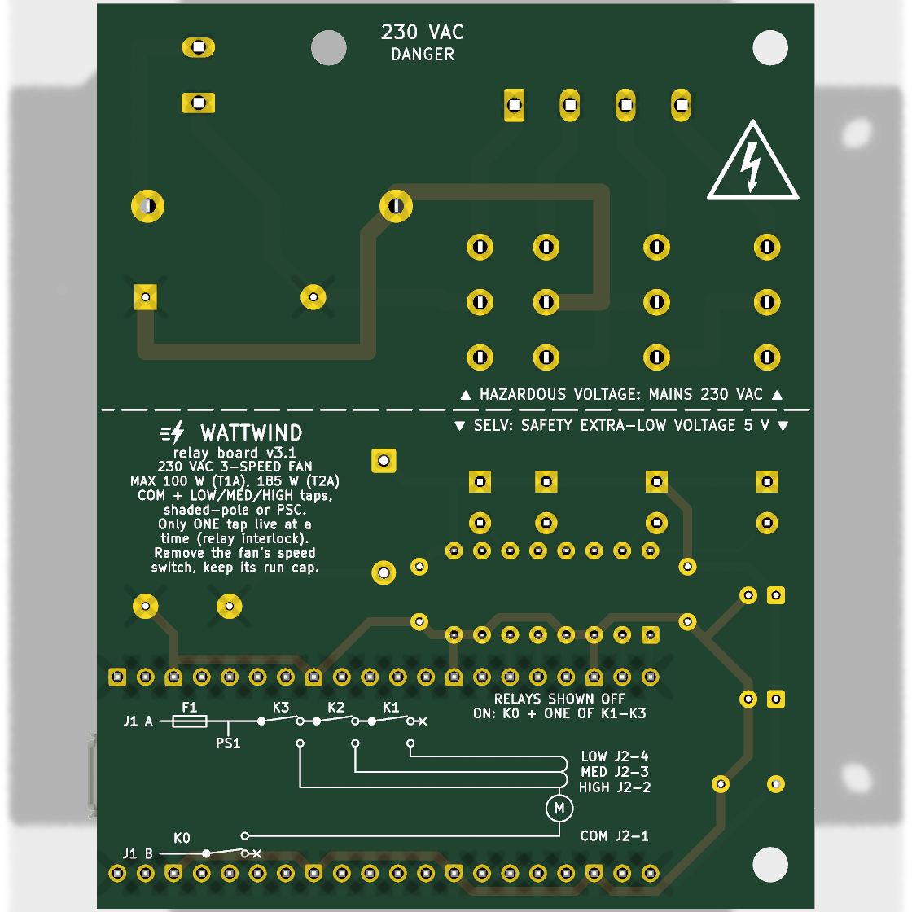
Bottom: the full wiring diagram, the fan rules and the mains / SELV boundary are printed on the board itself.
Low-voltage side
Pico 2 W soldered onto the board on its pin headers. Female header sockets fit too, if you want it
removable; the enclosure script then needs adjusting (see Enclosure).
Toshiba TBD62003APG relay driver, ULN2003-compatible but DMOS: about 0.2 V drop instead of
about 1 V, which leaves the relay coils comfortably above their pull-in voltage. Built-in flyback diodes.
Mean Well IRM-02-5 (5 V, 400 mA, reinforced isolation) feeds the Pico's VSYS through a
1N5819 Schottky (~0.3 V drop). The Pico's own diode does the same for USB, so electrically mains and
a USB cable can be connected at the same time without the supplies fighting (but see
Safety: while it's a prototype, unplug mains for USB work).
Relay coils run from VSYS, so the whole board can be tested on USB power alone, with no mains
connected.
Power budget: Pico 2 W ~150 mA + two coils (master + one speed) ~80 mA = ~230 mA.
Relay
Job
GPIO
Pico pin
Driver channel
K0
master, switches mains wire B
GP11
15
IN6 → OUT6
K1
LOW speed
GP15
20
IN1 → OUT1
K2
MEDIUM speed
GP14
19
IN2 → OUT2
K3
HIGH speed
GP12
16
IN5 → OUT5
The odd channel choice is deliberate: Pico pins 20, 19, 16, 15 sit straight under driver pins 1, 2, 5, 6,
and the driver outputs sit under the relay coils, so every control track is short, straight and
crossing-free. Relays are active HIGH, and at power-up the GPIOs are pulled down, so everything starts off.
The mains circuit
A European plug can go in either way round, so the two mains wires are called A and B rather than
live and neutral. The circuit is built so that the fan is cut on both wires when off, and so
that two speed windings can never be powered at once, even if the software goes wrong.
All relays shown off. On = K0 plus exactly one of K1–K3.
Interlock chain. Mains A runs through the normally-closed contacts K3 → K2 → K1. Energising K3
sends power to HIGH and at the same time cuts it from K2 and K1; K2 cuts K1. Two windings live at once
is physically impossible.
Both wires broken when off. K0 opens wire B; with all speed relays off, wire A dead-ends at K1's
unused NC contact. A single-pole relay on each side gives the same isolation as a double-pole switch.
A failed relay. Relay contacts can weld shut. One stuck relay alone can't run the fan when it is off:
K0 and the speed chain break different wires, so two would have to fail. A stuck speed relay shows as a level
that doesn't change (the fan keeps that speed); a stuck K0 doesn't show at all until a second fault. If the fan
ever runs while the page says Off, unplug it: the board needs repair (replace the relays).
PS1 is tapped before the relays, so the electronics stay powered with the fan off.
No earth on the board. The fan's earth stays inside the fan, connected through its own cord as
from the factory; the box is plastic and nothing in it is earthed.